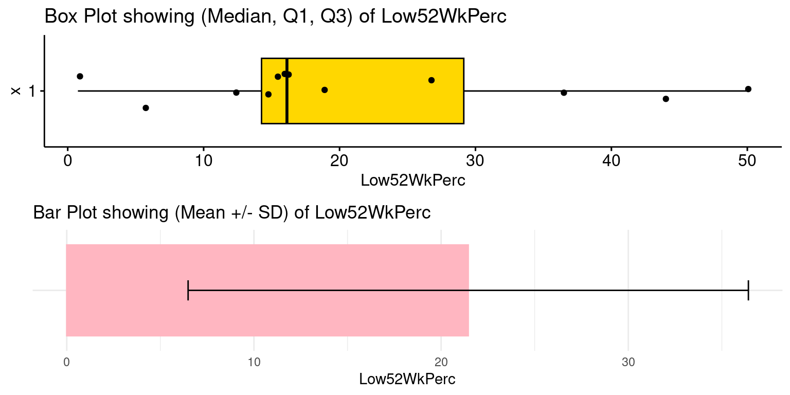
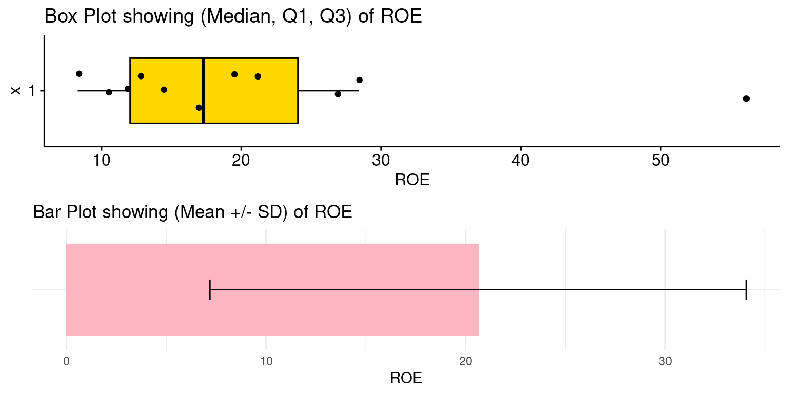
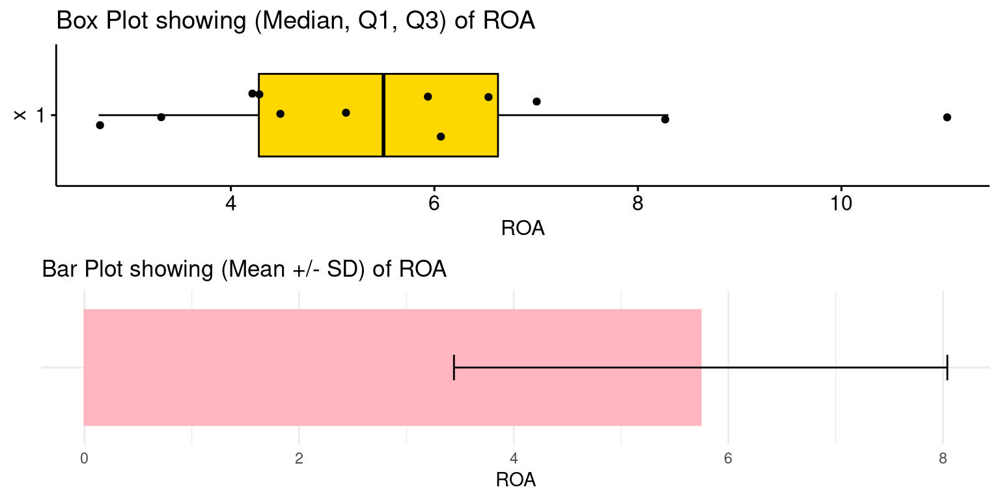
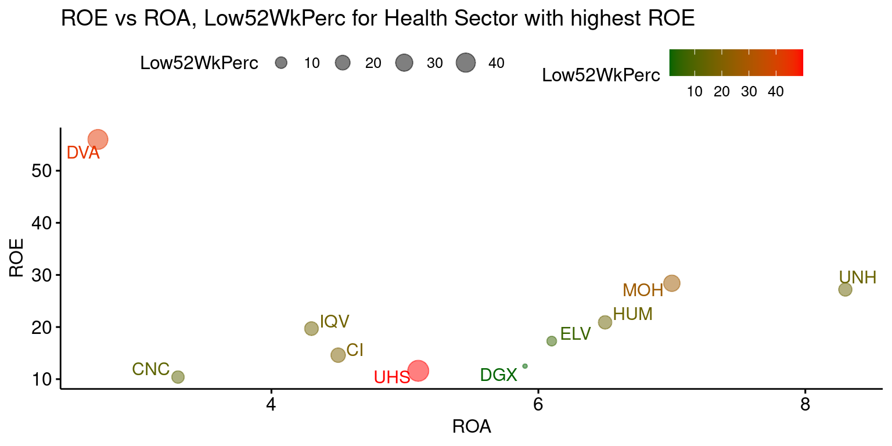

# Load the required libraries, suppressing annoying startup messages
library(dplyr, quietly = TRUE, warn.conflicts = FALSE)
library(tibble, quietly = TRUE, warn.conflicts = FALSE)
library(ggplot2, quietly = TRUE, warn.conflicts = FALSE) # For data visualization
library(ggpubr, quietly = TRUE, warn.conflicts = FALSE) # For data visualization
library(gsheet, quietly = TRUE, warn.conflicts = FALSE)
library(rmarkdown, quietly = TRUE, warn.conflicts = FALSE)
library(knitr, quietly = TRUE, warn.conflicts = FALSE)
library(kableExtra, quietly = TRUE, warn.conflicts = FALSE) Live Case: S&P500 (2)
Sep 05, 2023
Objective
TBE…
S&P 500 Data - PRELIMINARY SETUP
- We will continue our analysis of the S&P 500. Load the data, as described in the chapter Live Case: S&P500 (1 of 3)
# Read S&P500 stock data present in a Google Sheet.
library(gsheet)
prefix <- "https://docs.google.com/spreadsheets/d/"
sheetID <- "11ahk9uWxBkDqrhNm7qYmiTwrlSC53N1zvXYfv7ttOCM"
url500 <- paste(prefix,sheetID) # Form the URL to connect to
sp500 <- gsheet2tbl(url500) # Read it into a tibble called sp500- Rename columns, as described in the chapter Live Case: S&P500 (1 of 3).
suppressPackageStartupMessages(library(dplyr))
# Define a mapping of new column names
new_names <- c(
"Date", "Stock", "StockName", "Sector", "Industry",
"MarketCap", "Price", "Low52Wk", "High52Wk",
"ROE", "ROA", "ROIC", "GrossMargin",
"OperatingMargin", "NetMargin", "PE",
"PB", "EVEBITDA", "EBITDA", "EPS",
"EBITDA_YOY", "EBITDA_QYOY", "EPS_YOY",
"EPS_QYOY", "PFCF", "FCF",
"FCF_QYOY", "DebtToEquity", "CurrentRatio",
"QuickRatio", "DividendYield",
"DividendsPerShare_YOY", "PS",
"Revenue_YOY", "Revenue_QYOY", "Rating"
)
# Rename the columns using the new_names vector
sp500 <- sp500 %>%
rename_with(~ new_names, everything())- Remove Rows containing no data or Null values, as described in the chapter Live Case: S&P500 (1 of 3).
# Check for blank or null values in the "Stock" column
hasNull <- any(sp500$Stock == "" | is.null(sp500$Stock))
if (hasNull) {
# Remove rows with null or blank values from the dataframe tibble
sp500 <- sp500[!(is.null(sp500$Stock) | sp500$Stock == ""), ]
}- The S&P500 shares are divided into multiple Sectors. Thus, model Sector as a factor() variable, as described in the chapter Live Case: S&P500 (1 of 3).
sp500$Sector <- as.factor(sp500$Sector)- Stock Ratings: The S&P500 shares have Technical Ratings such as {Buy, Sell, ..}. Model the data column Rating as a factor() variable, as described in the chapter Live Case: S&P500 (1 of 3).
sp500$Rating <- as.factor(sp500$Rating)- Low52WkPerc: Create a new column to track Share Prices relative to their 52 Week Low, as described in the chapter Live Case: S&P500 (1 of 3).
sp500 <- sp500 %>% mutate(Low52WkPerc = round((Price - Low52Wk)*100 / Low52Wk,2))
colnames(sp500) [1] "Date" "Stock" "StockName"
[4] "Sector" "Industry" "MarketCap"
[7] "Price" "Low52Wk" "High52Wk"
[10] "ROE" "ROA" "ROIC"
[13] "GrossMargin" "OperatingMargin" "NetMargin"
[16] "PE" "PB" "EVEBITDA"
[19] "EBITDA" "EPS" "EBITDA_YOY"
[22] "EBITDA_QYOY" "EPS_YOY" "EPS_QYOY"
[25] "PFCF" "FCF" "FCF_QYOY"
[28] "DebtToEquity" "CurrentRatio" "QuickRatio"
[31] "DividendYield" "DividendsPerShare_YOY" "PS"
[34] "Revenue_YOY" "Revenue_QYOY" "Rating"
[37] "Low52WkPerc" Well done! Our data is now ready for analysis!!
- Low52WkPerc: Create a new column MarketCapBillions = MarketCap/1000,000,000, as described in the chapter Live Case: S&P500 (1 of 3).
sp500 <- sp500 %>% mutate(MarketCapBillions = round(MarketCap/1000000000))
colnames(sp500) [1] "Date" "Stock" "StockName"
[4] "Sector" "Industry" "MarketCap"
[7] "Price" "Low52Wk" "High52Wk"
[10] "ROE" "ROA" "ROIC"
[13] "GrossMargin" "OperatingMargin" "NetMargin"
[16] "PE" "PB" "EVEBITDA"
[19] "EBITDA" "EPS" "EBITDA_YOY"
[22] "EBITDA_QYOY" "EPS_YOY" "EPS_QYOY"
[25] "PFCF" "FCF" "FCF_QYOY"
[28] "DebtToEquity" "CurrentRatio" "QuickRatio"
[31] "DividendYield" "DividendsPerShare_YOY" "PS"
[34] "Revenue_YOY" "Revenue_QYOY" "Rating"
[37] "Low52WkPerc" "MarketCapBillions" Live Case: S&P500
ISSUE: Analysis of a particular SECTOR We have chosen to deeply analyze the HEALTH TECHNOLOGY Sector
SECTOR LEVEL ANALYSIS begins here
Filter the data by sector Health Services, and display the number of stocks in the sector
ts <- sp500 %>%
filter(Sector=='Health Services')
nrow(ts)[1] 12There are 12 number of of stocks in the sector Health Services
Select the Specific Coulumns from the filtered dataframe ts (Health Services)
ts2 <- ts %>%
select(Date, Stock, StockName,Sector, Industry, MarketCap, Price,Low52Wk, High52Wk,
ROE, ROA,ROIC,GrossMargin, GrossMargin,
NetMargin, Rating)
colnames(ts2) [1] "Date" "Stock" "StockName" "Sector" "Industry"
[6] "MarketCap" "Price" "Low52Wk" "High52Wk" "ROE"
[11] "ROA" "ROIC" "GrossMargin" "NetMargin" "Rating" Arrange the Dataframe by ROE
ts3 <- ts2 %>% arrange(desc(ROE))Significance of 52-Week Low Price
The 52-week low price of a stock is a significant indicator for multiple reasons, especially when considering shares listed on major indices like the S&P 500. Here’s why this metric is noteworthy:
Historical Perspective: The 52-week low offers a snapshot of how low the stock has traded over the past year relative to its current price, providing context about its price journey.
Potential Entry Point: Some investors view stocks that are near their 52-week low as potential buying opportunities, under the assumption that the stock might be undervalued and could rebound.
Psychological Level: Stocks approaching their 52-week low can be seen as testing a significant support level. If a stock consistently fails to breach its 52-week low, it might indicate that the market values the stock at that level, and it’s resistant to falling below it.
Basis for Technical Analysis: For technical analysts or traders, the 52-week low serves as a critical reference point. A consistent breach of this level might signify a bearish trend, while a rebound can indicate potential recovery.
Yield Implications for Dividend Stocks: For dividend-paying stocks, a price near the 52-week low (assuming the dividend hasn’t been cut) would imply a higher dividend yield, potentially making it attractive for income-seeking investors.
- Note of Caution: While the 52-week low is a valuable reference point, it’s essential to interpret it in conjunction with other financial and market indicators. A stock trading near its 52-week low doesn’t automatically make it a good buy, just as a stock trading near its 52-week high doesn’t automatically make it overvalued. Comprehensive analysis, should inform investment decisions.
Mutate a data column called (Low52WkPerc), then show top 10 ROE stocks
ts4 <- ts3 %>% mutate(Low52WkPerc = round((Price - Low52Wk)*100 / Low52Wk,2))
head(ts4[,c(1:3,10,16)],10)# A tibble: 10 × 5
Date Stock StockName ROE Low52WkPerc
<chr> <chr> <chr> <dbl> <dbl>
1 10/5/2023 DVA DaVita Inc. 56 44.0
2 10/5/2023 MOH Molina Healthcare Inc 28.4 26.7
3 10/5/2023 UNH UnitedHealth Group Incorporated 27.2 14.9
4 10/5/2023 HUM Humana Inc. 20.9 15.3
5 10/5/2023 IQV IQVIA Holdings, Inc. 19.7 16.3
6 10/5/2023 ELV Elevance Health, Inc. 17.3 5.9
7 10/5/2023 CI The Cigna Group 14.6 19.0
8 10/5/2023 DGX Quest Diagnostics Incorporated 12.5 0.75
9 10/5/2023 UHS Universal Health Services, Inc. 11.6 49.9
10 10/5/2023 CNC Centene Corporation 10.4 12.3 Summary Statistics of Low52WkPerc (Price rel. to 52-Week Low)
summaryStats <- ts4 %>% summarise(
N = n(),
Mean = mean(Low52WkPerc),
SD = sd(Low52WkPerc),
Median = median(Low52WkPerc),
Q1 = quantile(Low52WkPerc, 0.25),
Q3 = quantile(Low52WkPerc, 0.75),
Min = min(Low52WkPerc),
Max = max(Low52WkPerc)
)
Low52WkPercQ1 <- summaryStats$Q1 # Save Q1 of Low52WkPerc
summaryStats %>%
round(2) %>%
kable("html", caption = "Summary Statistics of Low52WkPerc (Price rel. to 52-Week Low)") %>%
kable_styling()| N | Mean | SD | Median | Q1 | Q3 | Min | Max |
|---|---|---|---|---|---|---|---|
| 12 | 21.45 | 14.97 | 16.13 | 14.26 | 29.14 | 0.75 | 49.94 |
Low52WkPerc for all the Health Sector Stocks, as shown below

Inexpensive Stocks with Low52WkPerc < Q1(Low52WkPerc)
ts4 %>%
select(Stock, StockName, Price, Low52Wk, Low52WkPerc) %>%
filter(Low52WkPerc < Low52WkPercQ1) %>%
arrange(Low52WkPerc)%>%
kable("html", caption = "Inexpensive Stocks with Low52WkPerc < Q1(Low52WkPerc)") %>%
kable_styling()| Stock | StockName | Price | Low52Wk | Low52WkPerc |
|---|---|---|---|---|
| DGX | Quest Diagnostics Incorporated | 120.5 | 119.6 | 0.75 |
| ELV | Elevance Health, Inc. | 436.3 | 412.0 | 5.90 |
| CNC | Centene Corporation | 68.3 | 60.8 | 12.34 |
Summary Statistics of Return on Equity (ROE)
summaryStats <- ts4 %>% summarise(
N = n(),
Mean = mean(ROE, na.rm = TRUE),
SD = sd(ROE, na.rm = TRUE),
Median = median(ROE, na.rm = TRUE),
Q1 = quantile(ROE, 0.25, na.rm = TRUE),
Q3 = quantile(ROE, 0.75, na.rm = TRUE),
Min = min(ROE, na.rm = TRUE),
Max = max(ROE, na.rm = TRUE)
)
ROE_Q3 <- summaryStats$Q3
summaryStats %>%
round(2) %>%
kable("html", caption = "Summary Statistics of Return on Equity (ROE)") %>%
kable_styling()| N | Mean | SD | Median | Q1 | Q3 | Min | Max |
|---|---|---|---|---|---|---|---|
| 12 | 20.63 | 13.44 | 17.3 | 12.05 | 24.05 | 8.3 | 56 |
- ROE for all the Stocks in Health Sector, as shown below

Stocks with ROE > Q3(ROE)
ts4 %>%
select(Stock, StockName, Price, ROA, ROE, Low52Wk, Low52WkPerc) %>%
filter(ROE > ROE_Q3) %>%
arrange(desc(ROE)) %>%
kable("html", caption = "Stocks with ROE > Q3(ROE)") %>%
kable_styling()| Stock | StockName | Price | ROA | ROE | Low52Wk | Low52WkPerc |
|---|---|---|---|---|---|---|
| DVA | DaVita Inc. | 94.0 | 2.7 | 56.0 | 65.3 | 43.95 |
| MOH | Molina Healthcare Inc | 324.7 | 7.0 | 28.4 | 256.2 | 26.74 |
| UNH | UnitedHealth Group Incorporated | 512.1 | 8.3 | 27.2 | 445.7 | 14.90 |
Summary Statistics of Return on Equity (ROA)
summaryStats <- ts4 %>% summarise(
N = n(),
Mean = mean(ROA, na.rm = TRUE),
SD = sd(ROA, na.rm = TRUE),
Median = median(ROA, na.rm = TRUE),
Q1 = quantile(ROA, 0.25, na.rm = TRUE),
Q3 = quantile(ROA, 0.75, na.rm = TRUE),
Min = min(ROA, na.rm = TRUE),
Max = max(ROA, na.rm = TRUE)
)
ROA_Q3 <- summaryStats$Q3
summaryStats %>%
round(2) %>%
kable("html", caption = "Summary Statistics of Return on Equity (ROA)") %>%
kable_styling()| N | Mean | SD | Median | Q1 | Q3 | Min | Max |
|---|---|---|---|---|---|---|---|
| 12 | 5.74 | 2.3 | 5.5 | 4.27 | 6.62 | 2.7 | 11 |
- ROA for all the Stocks in Health Sector, as shown below

Stocks with ROA > Q3(ROA)
ts4 %>%
select(Stock, StockName, Price, ROA, ROE, Low52Wk, Low52WkPerc) %>%
filter(ROA > ROA_Q3) %>%
arrange(desc(ROA)) %>%
kable("html", caption = "Stocks with ROA > Q3(ROA)") %>%
kable_styling()| Stock | StockName | Price | ROA | ROE | Low52Wk | Low52WkPerc |
|---|---|---|---|---|---|---|
| HCA | HCA Healthcare, Inc. | 243.1 | 11.0 | NA | 178.3 | 36.34 |
| UNH | UnitedHealth Group Incorporated | 512.1 | 8.3 | 27.2 | 445.7 | 14.90 |
| MOH | Molina Healthcare Inc | 324.7 | 7.0 | 28.4 | 256.2 | 26.74 |
ROE versus ROA and colored by Price rel. to 52 Week Low
top10 <-
ts4 %>%
select(Stock, Price, Low52Wk, Low52WkPerc, ROA, ROE) %>%
arrange(desc(ROE))%>%
slice(1:10)
top10$name <- top10$Stock
ggscatter(top10,
x = "ROA",
y = "ROE",
size = "Low52WkPerc",
color = "Low52WkPerc",
alpha = 0.5,
label = "name",
repel = TRUE,
title = "ROE vs ROA, Low52WkPerc for Health Sector with highest ROE") +
gradient_color(c("darkgreen", "red"))
Summary Statistics of All key variables in Sector Health Services
ts3 <- na.omit(ts3)
ROESum <- ts3 %>%
summarise(
Mean = mean(ROE),
Median= sd(ROE),
Median= median(ROE),
Q1 = quantile(ROE, probs = 0.25, na.rm = TRUE),
Q3 = quantile(ROE, probs = 0.75, na.rm = TRUE),
Min = min(ROE),
max = max(ROE)
)
ROESum <- round(ROESum,2)
ROASum <- ts3 %>%
summarise(
Mean = mean(ROA),
Median= sd(ROA),
Median= median(ROA),
Q1 = quantile(ROA, probs = 0.25, na.rm = TRUE),
Q3 = quantile(ROA, probs = 0.75, na.rm = TRUE),
Min = min(ROA),
max = max(ROA)
)
ROASum <- round(ROASum,2)
ROICSum <- ts3 %>%
summarise(
Mean = mean(ROIC),
Median= sd(ROIC),
Median= median(ROIC),
Q1 = quantile(ROIC, probs = 0.25, na.rm = TRUE),
Q3 = quantile(ROIC, probs = 0.75, na.rm = TRUE),
Min = min(ROIC),
max = max(ROIC)
)
ROICSum <- round(ROICSum,2)
GrossMarginSum <- ts3 %>%
summarise(
Mean = mean(GrossMargin),
Median= sd(GrossMargin),
Median= median(GrossMargin),
Q1 = quantile(GrossMargin, probs = 0.25, na.rm = TRUE),
Q3 = quantile(GrossMargin, probs = 0.75, na.rm = TRUE),
Min = min(GrossMargin),
max = max(GrossMargin)
)
GrossMarginSum <- round(GrossMarginSum,2)
NetMarginSum <- ts3 %>%
summarise(
Mean = mean(NetMargin),
Median= sd(NetMargin),
Median= median(NetMargin),
Q1 = quantile(NetMargin, probs = 0.25, na.rm = TRUE),
Q3 = quantile(NetMargin, probs = 0.75, na.rm = TRUE),
Min = min(NetMargin),
max = max(NetMargin)
)
NetMarginSum <- round(NetMarginSum,2)
Metrics <- c("ROE","ROA","ROIC","GrossMargin","NetMargin")
ftab <- rbind(ROESum, ROASum, ROICSum, GrossMarginSum, NetMarginSum)
ftab <- cbind(Metrics, ftab)
ftab Metrics Mean Median Q1 Q3 Min max
1 ROE 21.62 12.5 11.6 19.7 8.3 56.0
2 ROA 4.44 4.3 4.2 5.1 2.7 5.9
3 ROIC 5.70 6.0 5.1 6.3 3.7 7.4
4 GrossMargin 23.26 25.5 23.0 27.1 7.9 32.8
5 NetMargin 6.08 5.7 5.0 7.5 3.9 8.3ANALYSIS OF HEALTH SERVICES SECTOR
- Market Cap of all companies in Sector Health Services
library(janitor)
library(kableExtra)
# Market Cap by Stock
MCap <- ts3 %>%
group_by(Stock) %>%
summarise(
MarketCapBi = round(sum(na.omit(MarketCap)/1000000000),2))
# Sp500 Market Cap
SP500MarketCap <- sum(ts3$MarketCap/1000000000)
# calculating % market cap
PercentMarketCap <- round(MCap$MarketCapBi*100/SP500MarketCap,2)
MCapTab <- cbind(MCap,PercentMarketCap)
# sorting by PercentMarketCap
MCapTab <- MCapTab %>% arrange(desc(PercentMarketCap))
MCapTab <- MCapTab %>%
adorn_totals("row")
MCapTab <- knitr::kable(MCapTab, "html") %>% kable_styling()
MCapTab | Stock | MarketCapBi | PercentMarketCap |
|---|---|---|
| IQV | 35.32 | 42.66 |
| LH | 17.68 | 21.35 |
| DGX | 13.52 | 16.33 |
| DVA | 8.58 | 10.36 |
| UHS | 7.69 | 9.29 |
| Total | 82.79 | 99.99 |
- Shares which are most attractively priced in Sector Health Services
AttrShares <- ts4 %>% arrange(Low52WkPerc)
AttrShares <- AttrShares[, c(2:4,7,8,10,11,16)]
AttrShares <- knitr::kable(AttrShares, "html") %>% kable_styling()
AttrShares | Stock | StockName | Sector | Price | Low52Wk | ROE | ROA | Low52WkPerc |
|---|---|---|---|---|---|---|---|
| DGX | Quest Diagnostics Incorporated | Health Services | 120.5 | 119.6 | 12.5 | 5.9 | 0.75 |
| ELV | Elevance Health, Inc. | Health Services | 436.3 | 412.0 | 17.3 | 6.1 | 5.90 |
| CNC | Centene Corporation | Health Services | 68.3 | 60.8 | 10.4 | 3.3 | 12.34 |
| UNH | UnitedHealth Group Incorporated | Health Services | 512.1 | 445.7 | 27.2 | 8.3 | 14.90 |
| HUM | Humana Inc. | Health Services | 488.2 | 423.3 | 20.9 | 6.5 | 15.33 |
| LH | Laboratory Corporation of America Holdings | Health Services | 199.5 | 172.1 | 8.3 | 4.2 | 15.92 |
| IQV | IQVIA Holdings, Inc. | Health Services | 192.9 | 165.8 | 19.7 | 4.3 | 16.34 |
| CI | The Cigna Group | Health Services | 286.1 | 240.5 | 14.6 | 4.5 | 18.96 |
| MOH | Molina Healthcare Inc | Health Services | 324.7 | 256.2 | 28.4 | 7.0 | 26.74 |
| HCA | HCA Healthcare, Inc. | Health Services | 243.1 | 178.3 | NA | 11.0 | 36.34 |
| DVA | DaVita Inc. | Health Services | 94.0 | 65.3 | 56.0 | 2.7 | 43.95 |
| UHS | Universal Health Services, Inc. | Health Services | 123.7 | 82.5 | 11.6 | 5.1 | 49.94 |
PROFITABILITY OF HEALTH SERVICES SECTOR
- Shares have highest ROE within Sector Technology Services
AttrShares <- ts4 %>% arrange(desc(ROE))
AttrShares <- AttrShares[, c(2:4,7,8,10,11,16)]
AttrShares <- knitr::kable(AttrShares, "html") %>% kable_styling()
AttrShares | Stock | StockName | Sector | Price | Low52Wk | ROE | ROA | Low52WkPerc |
|---|---|---|---|---|---|---|---|
| DVA | DaVita Inc. | Health Services | 94.0 | 65.3 | 56.0 | 2.7 | 43.95 |
| MOH | Molina Healthcare Inc | Health Services | 324.7 | 256.2 | 28.4 | 7.0 | 26.74 |
| UNH | UnitedHealth Group Incorporated | Health Services | 512.1 | 445.7 | 27.2 | 8.3 | 14.90 |
| HUM | Humana Inc. | Health Services | 488.2 | 423.3 | 20.9 | 6.5 | 15.33 |
| IQV | IQVIA Holdings, Inc. | Health Services | 192.9 | 165.8 | 19.7 | 4.3 | 16.34 |
| ELV | Elevance Health, Inc. | Health Services | 436.3 | 412.0 | 17.3 | 6.1 | 5.90 |
| CI | The Cigna Group | Health Services | 286.1 | 240.5 | 14.6 | 4.5 | 18.96 |
| DGX | Quest Diagnostics Incorporated | Health Services | 120.5 | 119.6 | 12.5 | 5.9 | 0.75 |
| UHS | Universal Health Services, Inc. | Health Services | 123.7 | 82.5 | 11.6 | 5.1 | 49.94 |
| CNC | Centene Corporation | Health Services | 68.3 | 60.8 | 10.4 | 3.3 | 12.34 |
| LH | Laboratory Corporation of America Holdings | Health Services | 199.5 | 172.1 | 8.3 | 4.2 | 15.92 |
| HCA | HCA Healthcare, Inc. | Health Services | 243.1 | 178.3 | NA | 11.0 | 36.34 |
- Shares have highest ROA within Sector Health Services
AttrShares <- ts4 %>% arrange(desc(ROA))
AttrShares <- AttrShares[, c(2:4,7,8,10,11,16)]
AttrShares <- knitr::kable(AttrShares, "html") %>% kable_styling()
AttrShares | Stock | StockName | Sector | Price | Low52Wk | ROE | ROA | Low52WkPerc |
|---|---|---|---|---|---|---|---|
| HCA | HCA Healthcare, Inc. | Health Services | 243.1 | 178.3 | NA | 11.0 | 36.34 |
| UNH | UnitedHealth Group Incorporated | Health Services | 512.1 | 445.7 | 27.2 | 8.3 | 14.90 |
| MOH | Molina Healthcare Inc | Health Services | 324.7 | 256.2 | 28.4 | 7.0 | 26.74 |
| HUM | Humana Inc. | Health Services | 488.2 | 423.3 | 20.9 | 6.5 | 15.33 |
| ELV | Elevance Health, Inc. | Health Services | 436.3 | 412.0 | 17.3 | 6.1 | 5.90 |
| DGX | Quest Diagnostics Incorporated | Health Services | 120.5 | 119.6 | 12.5 | 5.9 | 0.75 |
| UHS | Universal Health Services, Inc. | Health Services | 123.7 | 82.5 | 11.6 | 5.1 | 49.94 |
| CI | The Cigna Group | Health Services | 286.1 | 240.5 | 14.6 | 4.5 | 18.96 |
| IQV | IQVIA Holdings, Inc. | Health Services | 192.9 | 165.8 | 19.7 | 4.3 | 16.34 |
| LH | Laboratory Corporation of America Holdings | Health Services | 199.5 | 172.1 | 8.3 | 4.2 | 15.92 |
| CNC | Centene Corporation | Health Services | 68.3 | 60.8 | 10.4 | 3.3 | 12.34 |
| DVA | DaVita Inc. | Health Services | 94.0 | 65.3 | 56.0 | 2.7 | 43.95 |